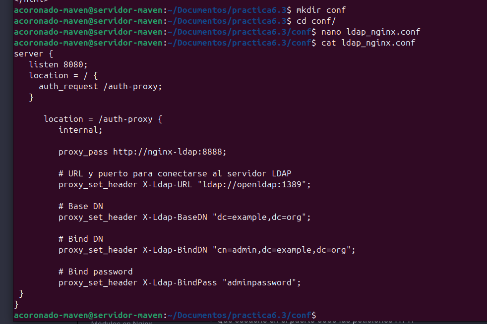
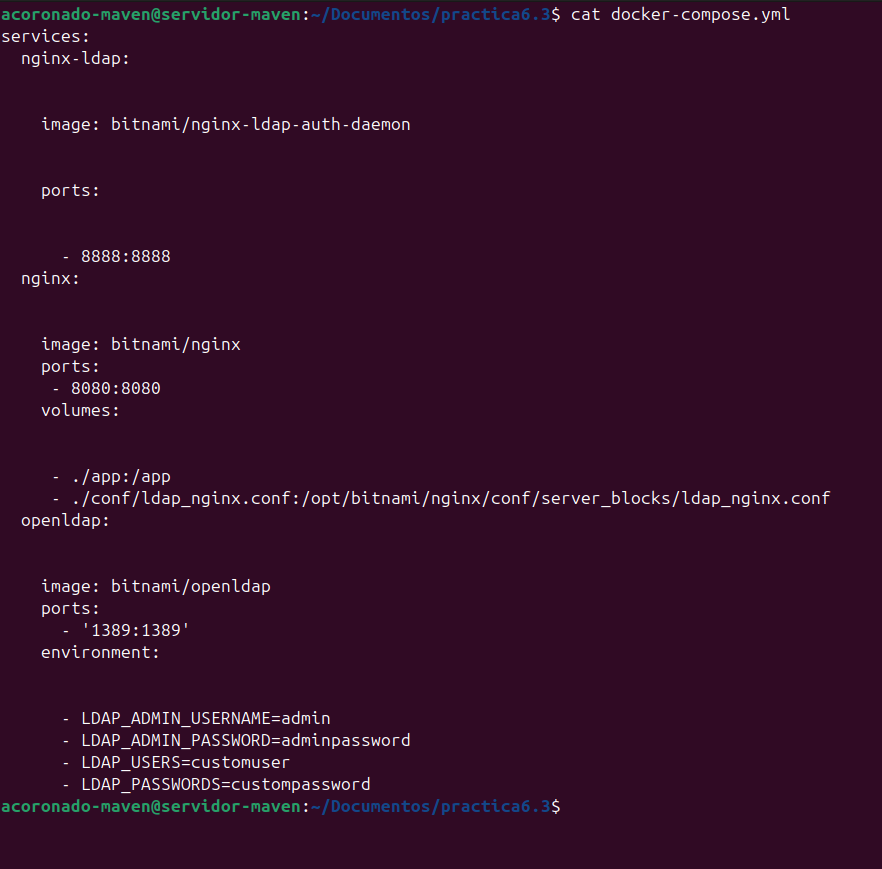
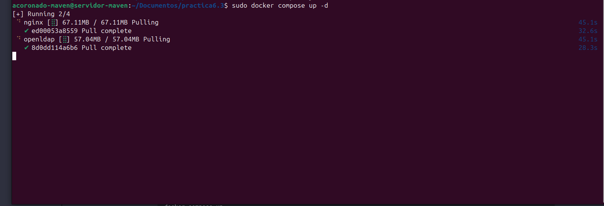
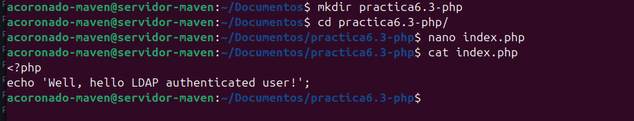
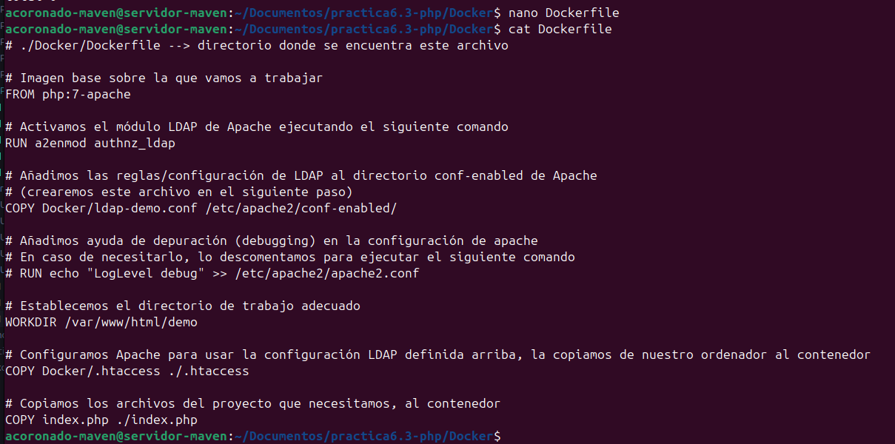
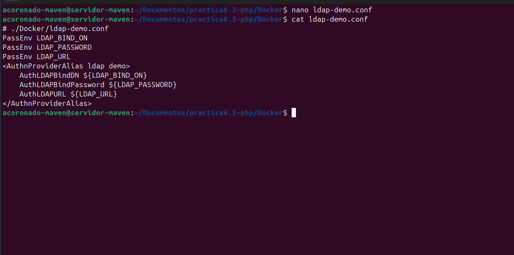
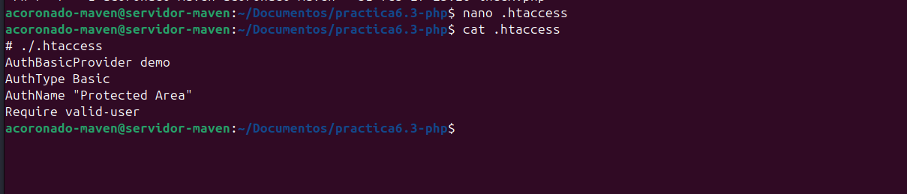
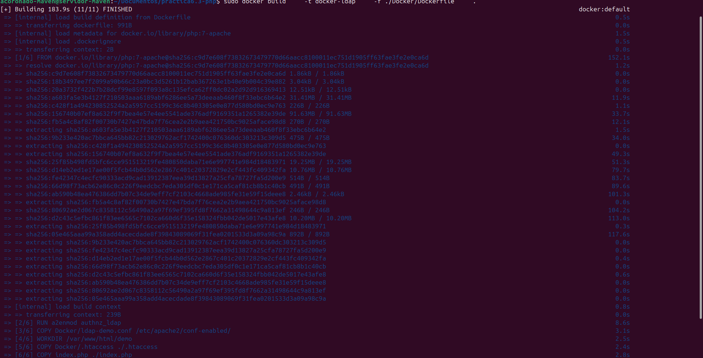
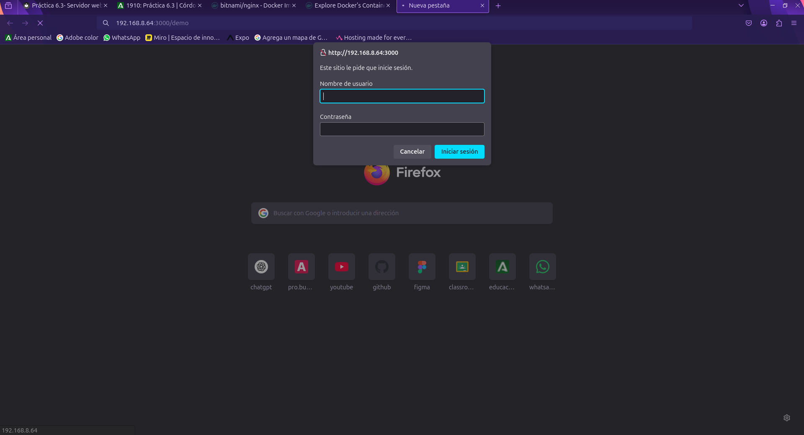

Práctica 6.3 - Despliegue de servidores web con usuarios autenticados mediante LDAP usando Docker y docker-compose
Despliegue con Docker de Nginx + demonio de autenticación LDAP + OpenLADP
Para esta práctica crearemos un nuevo directorio en la carpeta Documentos la cual contendrá
un index.html
Tras esto procederemos a crear el archivo index.html con el siguiente contenido

Una vez creado el archivo, procederemos a crear un nuevo directorio llamado conf
en donde guardaremos la configuración de Nginx.
Una vez creado el directorio, crearemos el siguiente archivo ladp_nginx.conf e
introduciremos la siguiente configuración.
server {
listen 8080;
location = / {
auth_request /auth-proxy;
}
location = /auth-proxy {
internal;
proxy_pass http://nginx-ldap:8888;
# URL y puerto para conectarse al servidor LDAP
proxy_set_header X-Ldap-URL "ldap://openldap:1389";
# Base DN
proxy_set_header X-Ldap-BaseDN "dc=example,dc=org";
# Bind DN
proxy_set_header X-Ldap-BindDN "cn=admin,dc=example,dc=org";
# Bind password
proxy_set_header X-Ldap-BindPass "adminpassword";
}
}

Basicamente en esta configuración le decimos a Nginx lo siguiente:
- Que escuche el puerto 8080 para las peticiones HTTP.
- Que cuando se acceda al sitio web, se solicite autorización en el directorio del sitio web.
- Se crea un nuevo location para ese directorio y que es donde se realizará la configuración de cómo conectarnos a nuestro openldap.
- Se indica la URL de nuestro openldap.
- El DN, base sobre el que se realizarán las búsquedas en openldap.
- El usuario y contraseña con el que nos conectaremos al openldap.
Una vez explicado esto, crearemos el archivo docker-compose.yml con la siguiente
configuración:
services:
nginx-ldap:
image: bitnami/nginx-ldap-auth-daemon
ports:
- 8888:8888
nginx:
image: bitnami/nginx
ports:
- 8080:8080
volumes:
- ./app:/app
- ./conf/ldap_nginx.conf:/opt/bitnami/nginx/conf/server_blocks/ldap_nginx.conf
openldap:
image: bitnami/openldap
ports:
- '1389:1389'
environment:
- LDAP_ADMIN_USERNAME=admin
- LDAP_ADMIN_PASSWORD=adminpassword
- LDAP_USERS=customuser
- LDAP_PASSWORDS=custompassword

Una vez creado, solo nos queda ejecutar el comando para arrancar los servicios:
Y como podemos ver docker ya empieza a descargar las imagenes

Despliegue con Docker de PHP + Apache con autenticación LDAP
- Creamos un directorio que se llame
Practica 6.3 - PHP
- Ahora creamos,
index.phpdentro del directorio que hemos creado anteriormente.

- Lo siguiente que deberemos hacer será crear otro directorio llamado
Dockery dentro él, un archivo Dockerfile.
# ./Docker/Dockerfile --> directorio donde se encuentra este archivo
# Imagen base sobre la que vamos a trabajar
FROM php:7-apache
# Activamos el módulo LDAP de Apache ejecutando el siguiente comando
RUN a2enmod authnz_ldap
# Añadimos las reglas/configuración de LDAP al directorio conf-enabled de Apache
# (crearemos este archivo en el siguiente paso)
COPY Docker/ldap-demo.conf /etc/apache2/conf-enabled/
# Añadimos ayuda de depuración (debugging) en la configuración de apache
# En caso de necesitarlo, lo descomentamos para ejecutar el siguiente comando
# RUN echo "LogLevel debug" >> /etc/apache2/apache2.conf
# Establecemos el directorio de trabajo adecuado
WORKDIR /var/www/html/demo
# Configuramos Apache para usar la configuración LDAP definida arriba, la copiamos de nuestro ordenador al contenedor
COPY Docker/.htaccess ./.htaccess
# Copiamos los archivos del proyecto que necesitamos, al contenedor
COPY index.php ./index.php

- Ahora creamos el archivo
./Docker/ladp-demo.conf, que es la configuración LADP. Las directivas PassEnv al principio del archivo nos permiten omitir credenciales y pasarlas luego como variables de entorno al correr el contenedor.
# ./Docker/ldap-demo.conf
PassEnv LDAP_BIND_ON
PassEnv LDAP_PASSWORD
PassEnv LDAP_URL
<AuthnProviderAlias ldap demo>
AuthLDAPBindDN ${LDAP_BIND_ON}
AuthLDAPBindPassword ${LDAP_PASSWORD}
AuthLDAPURL ${LDAP_URL}
</AuthnProviderAlias>

- Creamos un nuevo archivo llamado
.htacces:

- Por último ejecutaremos el siguiente comando para que docker cree la imagen.

- Una vez creada la imagen ejecutaremos el contenedor indicando las credenciales de nuestra cuenta LDAP mediante variables de entorno con la flag -e. Para este caso, vamos a probar un servidor LDAP externo.
docker run \
-p 3000:80 \
--name ldap_demo \
-e LDAP_BIND_ON='cn=read-only-admin,dc=example,dc=com' \
-e LDAP_PASSWORD='password' \
-e LDAP_URL='LDAP://ldap.forumsys.com/dc=example,dc=com' \
docker-ldap
- No nos queda más que ir a http://IP-Máq-Debian:3000/demo. Si todo ha ido bien, nos solicitará nuestras credenciales para iniciar sesion.
